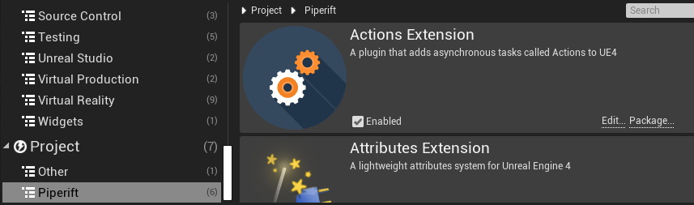
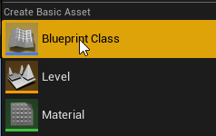
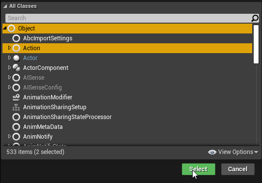
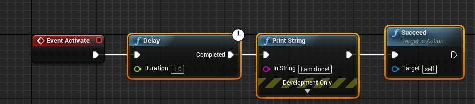
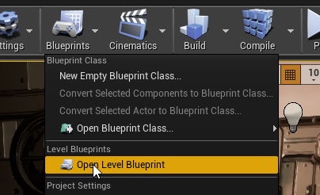
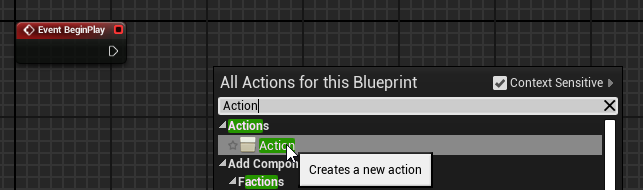

Quick Start
Quick Start will show the basic steps to follow to setup the plugin and start using it at a base level.
Setting Up the Project
We can start by creating an empty project (How to create UE4 projects) or instead using your own. Then installing the plugin from marketplace or inside Plugins folder (See Installation).
If everything went right, we should see the plugin enabled under Edit->Plugins->Piperift

Actions Extension doesn't require anything else to work. 🎊
Creating The action
Lets start by creating a very simple action.
First we go to the content browser, right click, Blueprint Class

Then we select Action class (or any other child class of Action)

Then we open the blueprint we created and add the following functions on Activate. This will be called when the action starts its execution, then wait 1 second, and finish.

Make sure your actions call Succeed or Fail. Otherwise the action will run until its owner is destroyed or the game closes.
Calling The action
Now that we have our action ready, we have to execute it. For that we will go to our level blueprint.

Then from our BeginPlay we add the node "Action"

Finally, we assign the action we created previously to the class pin

The Result
After all the previous steps we will see that the message prints exactly 1 second after we hit play.